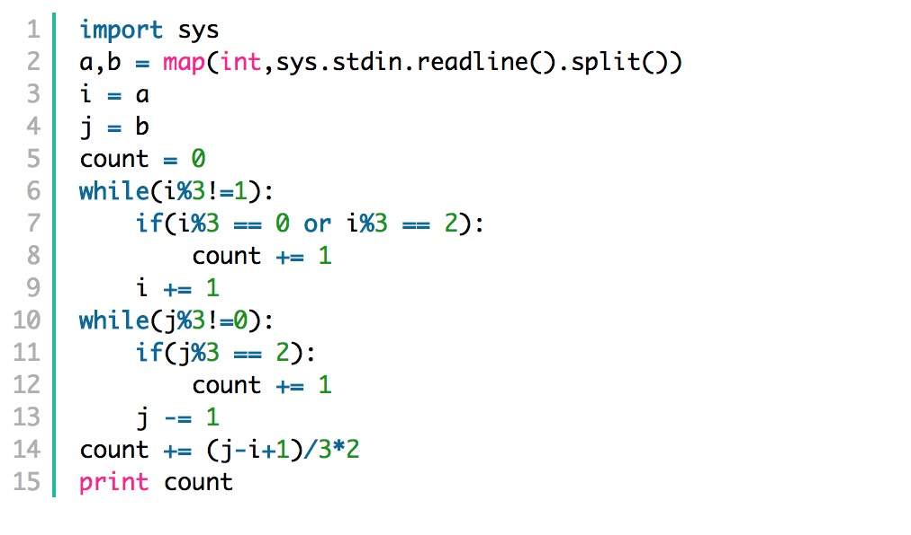

☰ 目录
[网易云Cpp开发，math]20180328_求被3整除的个数
题目如下：


分析：
第一个数是： 1
第二个数是： 12
第三个数是： 123
第四个数是：1234
….
第n个数是： 1234 … n
判断第n个数 能否被3 整除，只需要求n的 各个数的和能否被3 整除即可。 即 (1+ 2+ 3 + …. + n) % 3 0
也就是 { (n+1)n/2 } % 3 0
#include <iostream>
using namespace std;
int div_count(int l, int r) {
int ret = 0;
for (int j = l; j <= r; ++j) {
int k = 1;
long long sum = ((long long)j + 1) * (long long)j / 2; /// 对 n 个数字求和
if (sum % 3 == 0) {
ret++;
}
}
return ret;
}
int main() {
int l, r;
cin >> l >> r;
cout << div_count(l, r) << endl;
return 0;
}
还有一种方法，找数字规律

import sys
a,b = map(int,sys.stdin.readline().split())
j = a;
j = b;
count = 0;
while( i % 3 != 1 ):
if( i % 3 ==0 or i % 3 == 2 ):
count += 1
i += 1
while( j % 3 != 0 ):
if( j%3 == 2 ):
count += 1
j -= 1
count += (j-i+1)/3 *2
print count